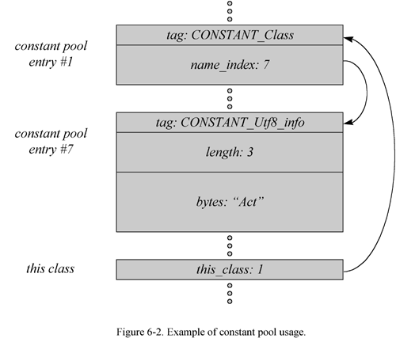
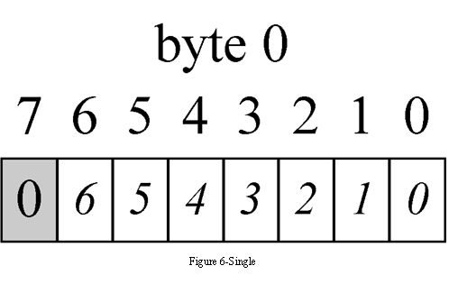
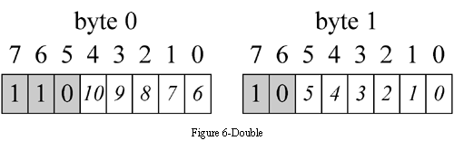
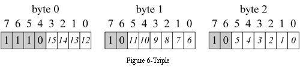

Any use of this Beta Book is subject to the rules stated in the Terms of Use.
| © 1997 The McGraw-Hill Companies, Inc. All rights reserved. Any use of this Beta Book is subject to the rules stated in the Terms of Use. | |
The previous chapter, the first of Part II, "Java Internals," gave an overview of the Java Virtual Machine. The next four chapters will focus on different aspects of the Java Virtual Machine. This chapter takes a look at the Java class file. It describes the contents of the class file, including the structure and format of the constant pool. This chapter serves as a complete reference of the Java class file format.
Accompanying this chapter on the CD-ROM is an applet that interactively illustrates the material presented in the chapter. The applet, named Getting Loaded, simulates the Java Virtual Machine loading a Java class file. At the end of this chapter, you will find a description of this applet and an instructions on how to use it.
What is a Java Class File?
The Java class file is a precisely defined binary file format for Java programs. Each Java class file represents a complete description of one Java class or interface. There is no way to put more than one class or interface into a single class file. The precise definition of the class file format ensures that any Java class file can be loaded and correctly interpreted by any Java Virtual Machine, no matter what system produced the class file or what system hosts the virtual machine.
Although the class file is related to the Java language architecturally, it is not inextricably linked to the Java language. As shown in Figure 6-1, you could write programs in other languages and compile them to class files, or you could compile your Java programs to a different binary file format. Nevertheless, most Java programmers will likely use the class file as the primary vehicle for delivering their programs to Java Virtual Machines.

As mentioned in earlier chapters, the Java class file is a binary stream of 8-bit bytes. Data items are stored sequentially in the class file with no padding between adjacent items. The lack of padding helps keep class files compact. Items that occupy more than one byte are split up into several consecutive bytes that appear in big-endian (higher bytes first) order.
Just as your Java classes can contain varying numbers of fields, methods, method parameters, local variables, and so on, the Java class file can contain many items that vary in size or number from one class file to another. In the class file, the size or length of a variable-length item precedes the actual data for the item. This allows class file streams to be parsed from beginning to end, reading in the size of an item first followed by the item data.
What's in a Class File?
The Java class file contains everything a Java Virtual Machine needs to know about one Java class or interface. The remainder of this chapter describes the class file format using tables. Each table has a name and shows an ordered list of items that can appear in a class file. Items appear in the table in the order in which they appear in the class file. Each item has a type, a name, and a count. The type is either a table name or one of the "primitive types" shown in Table 6-1. All values stored in items of type u2, u4, and u8 appear in the class file in big-endian order.
Table 6-1. Class file "primitive types"
| u1 | a single unsigned byte |
| u2 | two unsigned bytes |
| u4 | four unsigned bytes |
| u8 | eight unsigned bytes |
The major components of the class file, in their order of appearance in the class file, are shown in Table 6-2. Each of these components is described in more detail below.
Table 6-2. Format of a ClassFile Table
| Type& | #9;Name | Count | ||
| u4 | magic | 1 | ||
| u2 | minor_version | 1 | ||
| u2 | major_version | 1 | ||
| u2 | constant_pool_count | 1 | ||
| cp_info | constant_pool | constant_pool_count | - 1 | |
| u2 | access_flags | 1 | ||
| u2 | this_class | 1 | ||
| u2 | super_class | 1 | ||
| u2 | interfaces_count | 1 | ||
| u2 | interfaces | interfaces_count | ||
| u2 | fields_count | 1 | ||
| field_info | fields | fields_count | ||
| u2 | methods_count | 1 | ||
| method_info | methods | methods_count | ||
| u2 | attributes_count | 1 | ||
| attribute_info | attributes | attributes_count |
magic
The first four bytes of every Java class file are its magic number, 0xCAFEBABE. The magic number makes non-Java class files easier to identify. If a file doesnít start with 0xCAFEBABE, it definitely isnít a Java class file. A magic number can be chosen by a file formatís designers to be any arbitrary number that isnít already in widespread use. The magic number for the Java class file was chosen back in the days when "Java" was called "Oak." According to Patrick Naughton, a key member of the original Java team, the magic number was chosen "long before the name Java was ever uttered in reference to this language. We were looking for something fun, unique, and easy to remember. It is only a coincidence that 0xCAFEBABE, an oblique reference to the cute baristas at Peet's Coffee, was foreshadowing for the name Java."
minor_version and major_version
The second four bytes of the class file contain the minor and major version numbers. As Java technology evolves, new features may occasionally be added to the Java class file format. Each time the class file format changes, the version numbers will change as well. To the Java Virtual Machine, the version numbers identify the format to which a particular class file adheres. Java Virtual Machines will generally be able to load class files with a given major version number and a range of minor version numbers. Java Virtual Machines must reject class files with version numbers outside their valid range.
For class files generated by 1.0 or 1.1 compilers, the major version number is 45. The minor version number is 3.
constant_pool_count and constant_pool
Following the magic and version numbers in the class file is the constant pool. As mentioned in Chapter 5, "The Java Virtual Machine," the constant pool contains the constants associated with the class or interface defined by the file. Constants such as literal strings, final variable values, class names, and method names are stored in the constant pool. The constant pool is organized as a list of entries. A count of the number of entries in the list, constant_pool_count, precedes the actual list, constant_pool.
Many entries in the constant pool refer to other entries in the constant pool, and many items that follow the constant pool in the class file refer back to entries in the constant pool. Throughout the class file, constant pool entries are referred to by the integer index that indicates their position in the constant_pool list. The first entry in the list has an index of one, the second has an index of two, and so on. Although there is no entry in the constant_pool list that has an index of zero, the missing zeroeth entry is included in the constant_pool_count. For example, if a constant_pool list includes fourteen entries (with indexes one through fourteen), the constant_pool_count would be fifteen.
Each constant pool entry starts with a one-byte tag that indicates the type of constant making its home at that position in the list. Once a Java Virtual Machine grabs and interprets this tag, it knows what to expect after the tag. Table 6-3 shows the names and values of the constant pool tags.
Table 6-3. Constant pool tags
| Entry Type | Tag Value | Description |
| CONSTANT_Utf8 | 1 | A UTF-8 encoded Unicode string |
| CONSTANT_Integer | 3 | An int literal value |
| CONSTANT_Float | 4 | A float literal value |
| CONSTANT_Long | 5 | A long literal value |
| CONSTANT_Double | 6 | A double literal value |
| CONSTANT_Class | 7 | A symbolic reference to a class or interface |
| CONSTANT_String | 8 | A String literal value |
| CONSTANT_Fieldref | 9 | A symbolic reference to a field |
| CONSTANT_Methodref | 10 | A symbolic reference to a method declared in a class |
| CONSTANT_InterfaceMethodref | 11 | A symbolic reference to a method declared in an interface |
| CONSTANT_NameAndType | 12 | Part of a symbolic reference to a field or method |
For each tag shown in Table 6-3, there is a corresponding table. The name of the table is formed by appending "_info" to the tag name. For example, the table that corresponds to the CONSTANT_Class tag is called CONSTANT_Class_info. The CONSTANT_Utf8_info table stores a compressed form of Unicode strings. The tables for the various kinds of constant pool entries are described in detail later in this chapter.
The constant pool plays an important role in the dynamic linking of Java programs. In addition to literal constant values, the constant pool contains the following kinds of symbolic references:
A field is an instance or class variable of the class or interface. A field descriptor is a string that indicates the fieldís type. A method descriptor is a string that indicates the methodís return type and the number, order, and types of its parameters. The constant poolís fully qualified names and method and field descriptors are used at run time to link code in this class or interface with code and data in other classes and interfaces. The class file contains no information about the eventual memory layout of its components, so classes, fields, and methods cannot be referenced directly by the bytecodes in the class file. The Java Virtual Machine resolves the actual address of any referenced item at run time given a symbolic reference from the constant pool. For example, bytecode instructions that invoke a method give constant pool index of a symbolic reference to the method to invoke. This process of using the symbolic references in the constant pool is described in more detail in Chapter 8, "The Linking Model."
access_flags
The first two bytes after the constant pool, the access flags, reveal several pieces of information about the class or interface defined in the file. To start with, the access flags indicate whether the file defines a class or an interface. The access flags also indicate what modifiers were used in the declaration of the class or interface. Classes and interfaces can be public or abstract. Classes can be final, though final classes cannot be abstract. Interfaces canít be final. The bits used for the various flags are shown in Table 6-4.
Table 6-4. Flag bits in the access_flags item of ClassFile tables
| Flag Name | Value | Meaning if Set | Set By |
| ACC_PUBLIC | 0x0001 | Type is public | Classes and interfaces |
| ACC_FINAL | 0x0010 | Class is final | Classes only |
| ACC_SUPER | 0x0020 | Use new | invokespecial semanticsClasses and interfaces |
| ACC_INTERFACE | 0x0200 | Type is an interface, not a class | All interfaces, no classes |
| ACC_ABSTRACT | 0x0400 | Type is abstract | All interfaces, some classes |
The ACC_SUPER flag exists for backwards compatibility with Sunís older Java compilers. In Sunís older Java Virtual Machines, the invokespecial instruction had more relaxed semantics. All new compilers should set the ACC_SUPER flag. All new implementations of the Java Virtual Machine should implement the newer, stricter invokespecial semantics. (See the invokespecial instruction in Appendix A for a description of these semantics.) Sunís older compilers generate class files with the ACC_SUPER flag set to zero. Sunís older Java Virtual Machines ignore the flag if it is set.
All unused bits in access_flags must be set to zero and ignored by Java Virtual Machine implementations.
this_class
The next two bytes are the this_class item, an index into the constant pool. The constant pool entry at position this_class must be a CONSTANT_Class_info table, which has two parts: a tag and a name_index. The tag will have the value CONSTANT_Class. The constant pool entry at position name_index will be a CONSTANT_Utf8_info table containing the fully qualified name of the class or interface.
The this_class item provides a glimpse of how the constant pool is used. By itself, the this_class item is just an index into the constant pool. When a Java Virtual Machine looks up the constant pool entry at position this_class, it will find an entry that identifies itself via its tag as a CONSTANT_Class_info. The Java Virtual Machine knows CONSTANT_Class_info entries always have an index into the constant pool, called name_index, following their tag. So the virtual machine looks up the constant pool entry at position name_index, where it should find a CONSTANT_Utf8_info entry that contains the fully qualified name of the class or interface. See Figure 6-2 for a graphical depiction of this process.

super_class
Following this_class in the class file is the super_class item, another two-byte index into the constant pool. The constant pool entry at position super_class will be a CONSTANT_Class_info entry that refers to the fully qualified name of this classís superclass. Because the base class of every object in Java programs is the java.lang.Object class, the super_class constant pool index will be valid for every class except Object. For Object, super_class is a zero. For interfaces, the constant pool entry at position super_class is java.lang.Object.
interfaces_count and interfaces
The component that follows super_class starts with interfaces_count, a count of the number of superinterfaces directly implemented by the class or interface defined in this file. Immediately following the count is interfaces, an array that contains one index into the constant pool for each superinterface directly implemented by this class or interface. Each superinterface is represented by a CONSTANT_Class_info entry in the constant pool that refers to the fully qualified name of the interface. Only direct superinterfaces, those that appear in the implements clause of the class or the extends clause of the interface declaration, appear in this array. The superinterfaces appear in the array in the order in which they appear (left to right) in the implements or extends clause.
fields_count and fields
Following the interfaces component in the class file is a description of the fields declared by this class or interface. This component starts with fields_count, a count of the number of fields, including both class and instance variables. Following the count is a list of variable-length field_info tables, one for each field. (The fields_count indicates the number of field_info tables in the list.) The only fields that appear in the fields list are those that were declared by the class or interface defined in the file. No fields inherited from superclasses or superinterfaces appear in the fields list.
Each field_info table reveals information about one field. The table contains the field's name, descriptor, and modifiers. If the field is declared as final, the field_info table also reveals the fieldís constant value. Some of this information is contained in the field_info table itself, and some is contained in constant pool locations referred to by the table. The field_info table is described in more detail later in this chapter.
methods_count and methods
Following the fields in the class file is a description of the methods declared by the class or interface. This component starts with methods_count, a two-byte count of the number of methods in the class or interface. The count includes only those methods that are explicitly defined by this class or interface. (It does not include any methods inherited from superclasses or superinterfaces.) Following the method count are the methods themselves, described in a list of method_info tables. (The methods_count indicates the number of method_info tables in the list.)
The method_info table contains several pieces of information about the method, including the methodís name and descriptor (its return type and argument types). If the method is not abstract, the method_info table includes the number of stack words required for the method's local variables, the maximum number of stack words required for the method's operand stack, a table of exceptions caught by the method, the bytecode sequence, and optional line number and local variable tables. If the method can throw any checked exceptions, the method_info table includes a list of those checked exceptions. The method_info table is described in detail later in this chapter.
attributes_count and attributes
The last component in the class file are the attributes, which give general information about the particular class or interface defined by the file. The attributes component starts with attributes_count, a count of the number of attribute_info tables appearing in the subsequent attributes list. The first item in each attribute_info table is an index into the constant pool of a CONSTANT_Utf8_info table that gives the attributeís name.
Attributes come in many varieties. Several varieties are defined by the Java Virtual Machine specification, but anyone can create their own varieties of attributes (following certain rules) and place them into class files. Java Virtual Machine implementations must silently ignore any attributes they donít recognize. The rules surrounding the creation of new varieties of attributes are described later in this chapter.
Attributes appear in several places in the class file, not just in the attributes item of the top-level ClassFile table. The attributes that appear in the ClassFile table give more information about the class or interface define by the file. Attributes that give more information about a field may be included as part of field_info table. Attributes that give more information about a method may be included as part of a method_info table.
The Java Virtual Machine specification defines two kinds of attributes that may appear in the attributes list of the ClassFile table: SourceCode and InnerClasses. These two attributes are described in detail later in this chapter.
Special Strings
The symbolic references contained in the constant pool involve three special kinds of strings: fully qualified names, simple names, and descriptors. All symbolic references include the fully qualified name of a class or interface. Symbolic references to fields include a simple field name and field descriptor in addition to a fully qualified type name. Symbolic references to methods include a simple method name and method descriptor in addition to a fully qualified name.
The same special strings are used to describe the class or interface that is defined by the class file. The class or interface name, the superclass name (if any), and the names of any superinterfaces are all given as fully qualified names. For each field declared by the class or interface, the constant pool contains a simple name and field descriptor. For each method declared by the class or interface, the constant pool contains a simple name and method descriptor.
Fully Qualified Names
Whenever constant pool entries refer to classes and interfaces, they give the fully qualified name of the class or interface. In the class file, fully qualified names have their dots replaced with slashes. For example, the representation of the fully qualified name of java.lang.Object in the class file is java/lang/Object. The fully qualified name of java.util.Hashtable in the class file is java/util/Hashtable.
Simple Names
The names of fields and methods appear in constant pool entries as simple (not fully qualified) names. For example, a constant pool entry that refers to the String toString() method of class java.lang.Object would give its method name as "toString". A constant pool entry that refers to the java.io.PrintStream out field of class java.lang.System would specify the field name simply as "out".
Descriptors
Symbolic references to fields and methods include a descriptor string in addition to a fully qualified class or interface name and a simple field or method name. A field descriptor gives the fieldís type. A method descriptor gives the methodís return type and the number and types of the methodís parameters.
Field and method descriptors are defined by the context free grammar shown below. Nonterminals of this grammar, such as FieldType, are shown in italic font. Terminals, such as B or V, are shown in fixed width font. The asterisk character (*) stands for zero or more occurrences of the item that precedes it placed side by side (with no intervening white space).
FieldType
FieldType
BaseType
ObjectType
ArrayType
B
C
D
F
I
J
S
Z
L<classname>;
[ ComponentType
FieldType
( ParameterDescriptor* ) ReturnDescriptor
FieldType
V
The meaning of each of the BaseType terminals is shown in Table 6-5. The V terminal represents methods that return void.
Table 6-5. BaseType terminals
| Terminal | Type |
| B | byte |
| C | char |
| D | double |
| F | float |
| I | int |
| J | long |
| S | short |
| Z | boolean |
Some examples of field descriptors are shown in Table 6-6.
Table 6-6. Examples of field descriptors
| Descriptor | Field Declaration |
| I | int i; |
| [[J | long[][] windingRoad; |
| [Ljava/lang/Object; | java.lang.Object[] stuff; |
| Ljava/util/Hashtable; | java.util.Hashtable ht; |
| [[[Z | boolean[][][] isReady; |
Some examples of method descriptors are shown in Table 6-7. Note that method descriptors donít include the hidden this parameter passed as the first argument to all instance methods.
Table 6-7. Examples of method descriptors
| Descriptor | Method Declaration |
| ()I | int getSize(); |
| ()Ljava/lang/String; | String toString(); |
| ([Ljava/lang/String;)V | void main(String[] args); |
| ()V | void wait() |
| (JI)V | void wait(long timeout, int nanos) |
| (ZILjava/lang/String;II)Z | boolean regionMatches(boolean ignoreCase, int toOffset, String other, int ooffset, int len); |
| ([BII)I | int read(byte[] b, int off, int len); |
The Constant Pool
The constant pool is an ordered list of cp_info tables, each of which follows the general form shown in Table 6-8. The tag item of a cp_info table, an unsigned byte, indicates the tableís variety and format. cp_info tables come in eleven varieties, each of which is described in detail in the following sections.
Table 6-8. General form of a cp_info table
| Type | Name | Count |
| u1 | tag | 1 |
| u1 | info | depends on tag value |
The CONSTANT_Utf8_info Table
A CONSTANT_Utf8_info table stores one constant string value in a modified UTF-8 format. This table is used to store many different kinds of strings, including:
As you can see from the above list, there are four basic kinds of information stored in CONSTANT_Utf8_info tables: string literals, descriptions of the class or interface being defined, symbolic references to other classes and interfaces, and strings associated with attributes. Some examples of strings associated with attributes are: the name of the attribute, the name of the source file from which the class file was generated, and the names and descriptors of local variables.
The UTF-8 encoding scheme allows all two-byte Unicode characters to be represented in a string, but enables ASCII characters to be represented by just one byte. Table 6-9 shows the format of a CONSTANT_Utf8_info table.
Table 6-9. Format of a CONSTANT_Utf8_info table
| Type | Name | Count |
| u1 | tag | 1 |
| u2 | length | 1 |
| u1 | bytes | length |
tag
The tag item has the value CONSTANT_Utf8 (1).
length
The length item gives the length in bytes of the subsequent bytes item.
bytes
The bytes item contains the characters of the string stored in a modified UTF-8 format. Characters in the range '\u0001' through '\u007f' (all the ASCII characters except the null character) are represented by one byte:

The null character, '\u0000', and the characters in the range '\u0080' through '\u07ff' are represented by two bytes:

Characters in the range '\u0800' through '\uffff' are represented by three bytes:

The encoding of UTF-8 strings in the bytes item of CONSTANT_Utf8_info tables differs from the standard UTF-8 format in two ways. First, in the standard UTF-8 encoding scheme, the null character is represented by one byte. In a CONSTANT_Utf8_info table, null characters are represented by two bytes. This two-byte encoding of nulls means that the bytes item never contains any byte equal to zero. The second way the bytes item of a CONSTANT_Utf8_info departs from the standard UTF-8 encoding is that only one-, two-, and three-byte encodings are used in the bytes item. The standard UTF-8 includes longer formats that arenít used in CONSTANT_Utf8_info tables.
The CONSTANT_Integer_info Table
The CONSTANT_Integer_info table stores a constant int value. This table is used only to store int literals. It is not used in symbolic references. Table 6-10 shows the format of a CONSTANT_Integer_info table.
Table 6-10. Format of a CONSTANT_Integer_info table
| Type | Name | Count |
| u1 | tag | 1 |
| u4 | bytes | 1 |
tag
The tag item has the value CONSTANT_Integer (3).
bytes
The bytes item contains the int value stored in big-endian order.
The CONSTANT_Float_info Table
The CONSTANT_Float_info table stores a constant float value. This table is used only to store float literals. It is not used in symbolic references. Table 6-11 shows the format of a CONSTANT_Float_info table.
Table 6-11. Format of a CONSTANT_Float_info table
| Type | Name | Count |
| u1 | tag | 1 |
| u4 | bytes | 1 |
tag
The tag item has the value CONSTANT_Float (4).
bytes
The bytes item contains the float value stored in big-endian order. For the details of the representation of float in the Java class file, see Chapter 14, "Floating Point Arithmetic."
The CONSTANT_Long_info Table
The CONSTANT_Long_info table stores a constant long value. This table is used only to store long literals. It is not used in symbolic references. Table 6-12 shows the format of a CONSTANT_Long_info table.
As noted above, a long occupies two slots in the constant pool table. In the class file, a long entry is just followed by the next entry, but the index of the next entry is two more than that of the long entry.
Table 6-12. Format of a CONSTANT_Long_info table
| Type | Name | Count |
| u1 | tag | 1 |
| u8 | bytes | 1 |
tag
The tag item has the value CONSTANT_Long (5).
bytes
The bytes item contains the long value stored in big-endian order.
The CONSTANT_Double_info Table
The CONSTANT_Double_info table stores a constant double value. This table is used only to store double literals. It is not used in symbolic references. Table 6-13 shows the format of a CONSTANT_Double_info table.
As noted above, a double occupies two slots in the constant pool table. In the class file, a double entry is just followed by the next entry, but the index of the next entry is two more than that of the double entry.
Table 6-13. Format of a CONSTANT_Double_info table
| Type | Name | Count |
| u1 | tag | 1 |
| u8 | bytes | 1 |
tag
The tag item has the value CONSTANT_Double (6).
bytes
The bytes item contains the double value stored in big-endian order. For the details of the representation of double in the Java class file, see Chapter 14, "Floating Point Arithmetic."
The CONSTANT_Class_info Table
The CONSTANT_Class_info table represents a class or interface in symbolic references. All symbolic references, whether they refer to a class, interface, field, or method, include a CONSTANT_Class_info table. Table 6-14 shows the format of a CONSTANT_Class_info table.
Table 6-14. Format of a CONSTANT_Class_info table
| Type | Name | Count |
| u1 | tag | 1 |
| u2 | name_index | 1 |
tag
The tag item has the value CONSTANT_Class (7).
name_index
The name_index item gives the index of a CONSTANT_Utf8_info table that contains a fully qualified name of a class or interface.
The CONSTANT_String_info Table
A CONSTANT_String_info represents a literal string value, which will be represented as an instance of class java.lang.String. This table is only used to represent literal strings. It is not used in symbolic references. Table 6-15 shows the format of a CONSTANT_String_info table.
Table 6-15. Format of a CONSTANT_String_info table
| Type | Name | Count |
| u1 | tag | 1 |
| u2 | string_index | 1 |
tag
The tag item has the value CONSTANT_String (8).
string_index
The string_index item gives the index of a CONSTANT_Utf8_info entry that contains the value of the literal string.
The CONSTANT_Fieldref_info Table
The CONSTANT_Fieldref_info table represents a symbolic reference to a field. Table 6-16 shows the format of a CONSTANT_Fieldref_info table.
Table 6-16. Format of a CONSTANT_Fieldref_info table
| Type | Name | Count |
| u1 | tag | 1 |
| u2 | class_index | 1 |
| u2 | name_and_type_index | 1 |
tag
The tag item has the value CONSTANT_Fieldref (9).
class_index
The class_index gives the index of the CONSTANT_Class_info entry for the class that declares the referenced field.
Note that the CONSTANT_Class_info specified by class_index must represent a class and not an interface. Although interfaces can declare fields, those fields are by definition public, static, and final. As mentioned in earlier chapters, class files do not contain symbolic references to static final fields of other classes. Instead, class files contain a copy of the constant value of any static final fields it uses. For example, if a class uses a static final field of type float that is declared in an interface, the class would have a CONSTANT_Float_info table in its own constant pool that stores the float value. For more information about this special treatment of static final fields, see Chapter 8, "The Linking Model."
name_and_type_index
The name_and_type_index gives the index of a CONSTANT_NameAndType_info entry that gives the fieldís simple name and descriptor.
The CONSTANT_Methodref_info Table
The CONSTANT_Methodref_info table represents a symbolic reference to a method declared in a class (not in an interface). Table 6-17 shows the format of a CONSTANT_Methodref_info table.
Table 6-17. Format of a CONSTANT_Methodref_info table
| Type | Name | Count |
| u1 | tag | 1 |
| u2 | class_index | 1 |
| u2 | name_and_type_index | 1 |
tag
The tag item has the value CONSTANT_Methodref (10).
class_index
The class_index gives the index of a CONSTANT_Class_info entry for the class that declares the referenced method. The CONSTANT_Class_info table specified by class_index must be a class and not an interface. Symbolic references to methods declared in interfaces use CONSTANT_InterfaceMethodref.
name_and_type_index
The name_and_type_index gives the index of a CONSTANT_NameAndType_info entry that gives the methodís simple name and descriptor.
The CONSTANT_InterfaceMethodref_info Table
The CONSTANT_InterfaceMethodref_info table represents a symbolic reference to a method declared in an interface (not in a class). Table 6-18 shows the format of a CONSTANT_InterfaceMethodref_info table.
Table 6-18. Format of a CONSTANT_InterfaceMethodref_info table
| Type | Name | Count |
| u1 | tag | 1 |
| u2 | class_index | 1 |
| u2 | name_and_type_index | 1 |
tag
The tag item has the value CONSTANT_InterfaceMethodref (11).
class_index
The class_index gives the index of a CONSTANT_Class_info entry for the interface that declares the referenced method. The CONSTANT_Class_info table specified by class_index must be an interface and not a class. Symbolic references to methods declared in classes use CONSTANT_Methodref.
name_and_type_index
The name_and_type_index gives the index of a CONSTANT_NameAndType_info entry that gives the methodís simple name and descriptor.
The CONSTANT_NameAndType_info Table
The CONSTANT_NameAndType_info table forms part of a symbolic reference to a field or method. This table gives constant pool entries of the simple name and the descriptor of the referenced field or method. Table 6-19 shows the format of a CONSTANT_NameAndType_info table.
Table 6-19. Format of a CONSTANT_NameAndType_info table
| Type | Name | Count |
| u1 | tag | 1 |
| u2 | name_index | 1 |
| u2 | descriptor_index | 1 |
tag
The tag item has the value CONSTANT_NameAndType (12).
name_index
The name_index gives the index of a CONSTANT_Utf8_info entry that gives the name of the field or method.
descriptor_index
The descriptor_index gives the index of a CONSTANT_Utf8_info entry that gives the descriptor of the field or method.
Fields
Each field (class variable and instance variable) declared in a class or interface is described by a field_info table in the class file. The format of the field_info table is shown in Table 6-20.
Table 6-20. Format of a field_info table
| Type | Name | Count |
| u2 | access_flags | 1 |
| u2 | name_index | 1 |
| u2 | descriptor_index | 1 |
| u2 | attributes_count | 1 |
| attribute_info | attributes | attributes_count |
access_flags
The modifiers used in declaring the field are placed into the fieldís access_flags item. Table 6-21 shows the bits used by each flag.
Table 6-21. Flags in the access_flags item of field_info tables
| Flag Name | Value | Meaning if Set | Set By |
| ACC_PUBLIC | 0x0001 | Field is public | Classes and interfaces |
| ACC_PRIVATE | 0x0002 | Field is private | Classes only |
| ACC_PROTECTED | 0x0004 | Field is protected | Classes only |
| ACC_STATIC | 0x0008 | Field is static | Classes and interfaces |
| ACC_FINAL | 0x0010 | Field is final | Classes and interfaces |
| ACC_VOLATILE | 0x0040 | Field is volatile | Classes only |
| ACC_TRANSIENT | 0x0080 | Field is transient | Classes only |
For fields declared in a class (not an interface), at most one of ACC_PUBLIC, ACC_PRIVATE, and ACC_PROTECTED may be set. ACC_FINAL and ACC_VOLATILE must not both be set. All fields declared in interfaces must have the ACC_PUBLIC, ACC_STATIC, and ACC_FINAL flags set.
All unused bits in access_flags must be set to zero and ignored by Java Virtual Machine implementations.
name_index
The name_index gives the index of a CONSTANT_Utf8_info entry that gives the simple (not fully qualified) name of the field.
descriptor_index
The descriptor_index gives the index of a CONSTANT_Utf8_info entry that gives the descriptor of the field.
attributes_count and attributes
The attributes item is a list of attribute_info tables. The attributes_count indicates the number of attribute_info tables in the list. Two kinds of attributes defined by the Java Virtual Machine specification that may appear in this item are ConstantValue and Synthetic. These two attributes are described in detail later in this chapter.
Methods
Each method declared in a class or interface or generated by the compiler is described in the class file by a method_info table. The two types of compiler-generated methods that may appear in class files are instance initialization methods (named <init) and class initialization methods (named <clinit). For more information on the compiler-generated methods, see Chapter 7, "The Lifetime of a Class." The format of the method_info table is shown in Table 6-22.
Table 6-22. Format of a method_info table
| Type | Name | Count |
| u2 | access_flags | 1 |
| u2 | name_index | 1 |
| u2 | descriptor_index | 1 |
| u2 | attributes_count | 1 |
| attribute_info | attributes | attributes_count |
access_flags
The modifiers used in declaring the method are placed into the methodís access_flags item. Table 6-23 shows the bits used by each flag.
Table 6-23. Flags in the access_flags item of method_info tables
| Flag Name | Value | Meaning if Set | Set By |
| ACC_PUBLIC | 0x0001 | Method is public | Classes and all methods of interfaces |
| ACC_PRIVATE | 0x0002 | Method is private | Classes only |
| ACC_PROTECTED | 0x0004 | Method is protected | Classes only |
| ACC_STATIC | 0x0008 | Method is static | Classes only |
| ACC_FINAL | 0x0010 | Method is final | Classes only |
| ACC_SYNCHRONIZED | 0x0020 | Method is synchronized | Classes only |
| ACC_NATIVE | 0x0100 | Method is native | Classes only |
| ACC_ABSTRACT | 0x0400 | Method is abstract | Classes and all methods of interfaces |
For methods declared in a class (not an interface), at most one of ACC_PUBLIC, ACC_PRIVATE, and ACC_PROTECTED may be set. If a methodís ACC_FINAL flag is set, then its ACC_SYNCHRONIZED, ACC_NATIVE, and ACC_ABSTRACT flags must not be set. If a methodís ACC_PRIVATE or ACC_STATIC flag is set, then its ACC_ABSTRACT flag must not be set. All methods declared in interfaces must have their ACC_PUBLIC and ACC_ABSTRACT flags set.
Instance initialization (<init) methods may only use flags ACC_PUBLIC, ACC_PRIVATE, and ACC_PROTECTED. Because class initialization (<clinit) methods are invoked by the Java Virtual Machine, never directly by Java bytecodes, the the access_flags for <clinit methods is ignored.
All unused bits in access_flags must be set to zero and ignored by Java Virtual Machine implementations.
name_index
The name_index gives the index of a CONSTANT_Utf8_info entry that gives the simple (not fully qualified) name of the method.
descriptor_index
The descriptor_index gives the index of a CONSTANT_Utf8_info entry that gives the descriptor of the method.
attributes_count and attributes
The attributes item is a list of attribute_info tables. The attributes_count indicates the number of attribute_info tables in the list. Three kinds of attributes that are defined by the Java Virtual Machine specification that may appear in this item are Code, Exceptions, and Synthetic. These three attributes are described in detail later in this chapter.
Attributes
As mentioned above, attributes appear in several places inside a Java class file. They can appear in the ClassFile, field_info, method_info, and Code_attribute tables. The Code_attribute table, an attribute itself, is described later in this section.
Every attribute follows the same general format of the attribute_info table, shown in Table 6-24. The first two bytes of an attribute, the attribute_name_index, form an index into the constant pool of a CONSTANT_Utf8_info table that contains the string name of the attribute. Each attribute_info, therefore, identifies its "type" by the first item in its table much like cp_info tables identify their type by the initial tag byte. The difference is that whereas the type of a cp_info table is indicated by an unsigned byte value, such as 3 (CONSTANT_Integer_info), the type of an attribute_info table is indicated by a string.
Following the attribute_name_index is a four-byte attribute_length item, which gives the length of the entire attribute_info table minus the initial six bytes. This length is necessary because anyone, following certain rules (outlined below), is allowed to add attributes to a Java class file. Java Virtual Machine implementations are allowed to recognize new attributes. Implementations must ignore any attributes they donít recognize. The attribute_length allows virtual machines to skip unrecognized attributes as they parse the class file.
Anyone who wishes to add a new attribute to a Java class file must follow these two rules:
Table 6-24. Format of an attribute_info table
| Type | Name | Count |
| u2 | attribute_name_index | 1 |
| u4 | attribute_length | 1 |
| u1 | info | attribute_length |
attribute_name_index
The attribute_name_index gives the index in the constant pool of a CONSTANT_Utf8_info entry that contains the name of the attribute.
attribute_length
The attribute_length item indicates the length in bytes of the attribute data excluding the initial six bytes that contain the attribute_name_index and attribute_length.
info
The info item contains the attribute data.
Attributes
The Java Virtual Machine specification defines eight types of attributes, shown in Table 6-25. All Java Virtual Machine implementations must recognize three of these attributes: Code, ConstantValue, and Exceptions. Implementations can choose whether to recognize or ignore the other predefined attributes. (The InnerClasses and Synthetic attributes were added in Java 1.1). All of these predefined attributes are described in detail later in this chapter.
Table 6-25. Types of attribute_info tables defined by the specification
| Name | Used By | Description |
| Code | method_info | The bytecodes and other data for one method |
| ConstantValue | field_info | The value of a final variable |
| Exceptions | method_info | The checked exceptions that a method may throw |
| InnerClasses | ClassFile | A description of the inner classes defined inside a class |
| LineNumberTable | Code_attribute | A mapping of line numbers to bytecodes for one method |
| LocalVariableTable | Code_attribute | A description of the local variables for one method |
| SourceFile | ClassFile | The name of the source file |
| Synthetic | field_info, method_info | An indicator that a field or method was generated by the compiler |
The Code Attribute
One Code_attribute table appears in the method_info table of every method that is not abstract or native. The format of a Code_attribute table is shown in Table 6-26.
Table 6-26. Format of a Code_attribute table
| Type | Name | Count |
| u2 | attribute_name_index | 1 |
| u4 | attribute_length | 1 |
| u2 | max_stack | 1 |
| u2 | max_locals | 1 |
| u4 | code_length | 1 |
| u1 | code | code_length |
| u2 | exception_table_length | 1 |
| exception_info | exception_table | exception_table_length |
| u2 | attributes_count | 1 |
| attribute_info | attributes | attributes_count |
attribute_name_index
The attribute_name_index gives the index in the constant pool of a CONSTANT_Utf8_info entry that contains the string "Code".
attribute_length
The attribute_length item gives the length in bytes of the Code attribute excluding the initial six bytes that contain the attribute_name_index and attribute_length items.
max_stack
The max_stack item gives the maximum number of words that will be on the operand stack of this method at any point during its execution.
max_locals
The max_locals item gives the number of words in the local variables that are required by this method.
code_length and code
The code_length item gives the length in bytes of the bytecode stream for this method. The bytecodes themselves appear in the code item.
exception_table_length and exception_table
The exception_table item is a list of exception_info tables. Each exception_info table describes one exception table entry. The exception_table_length item gives the number of exception_info tables that appear in the exception_table list. The order in which the exception_info tables appear in the list is the order in which the Java Virtual Machine will check for a matching exception handler (catch clause) if an exception is thrown while this method executes. The format of a exception_info table is shown in Table 6-27. For more information about exception tables, see Chapter 17, "Exceptions."
Table 6-27. Format of an exception_info table
| Type | Name | Count |
| u2 | start_pc | 1 |
| u2 | end_pc | 1 |
| u2 | handler_pc | 1 |
| u2 | catch_type | 1 |
The start_pc item gives the offset from the beginning of the code array for the beginning of the range covered by this exception handler.
The end_pc item gives the offset from the beginning of the code array for one byte past the end of the range covered by this exception handler.
The handler_pc item gives the offset from the beginning of the code array for the instruction to jump to (the first instruction of the exception handler) if a thrown exception is caught by this entry.
The catch_type item gives the constant pool index of a CONSTANT_Class_info entry for the type of exception caught by this exception handler. The CONSTANT_Class_info entry must represent class java.lang.Throwable or one of its subclasses.
If the value of catch_type is zero (which isnít a valid index into the constant pool, because the constant pool starts at index one), the exception handler handles all exceptions. A catch_type of zero is used to implement finally clauses. See Chapter 18, "Finally Clauses," for more information about how finally clauses are implemented.
attributes_count and attributes
The attributes item is a list of attribute_info tables. The attributes_count indicates the number of attribute_info tables in the list. The two kinds of attributes defined by the Java Virtual Machine specification that may appear in this item are LineNumberTable and LocalVariableTable. These two attributes are described in detail later in this chapter.
The ConstantValue Attribute
The ConstantValue attribute appears in field_info tables for fields that have a constant value. In the access_flags of a field_info table that includes a ConstantValue attribute, the ACC_STATIC flag must be set. The ACC_FINAL flag may also be set, though it is not required. When the virtual machine initializes a field that has a ConstantValue attribute, it assigns the constant value to the field. The format of a ConstantValue_attribute table is shown in Table 6-28.
Table 6-28. Format of a ConstantValue_attribute table
| Type | Name | Count |
| u2 | attribute_name_index | 1 |
| u4 | attribute_length | 1 |
| u2 | constantvalue_index | 1 |
attribute_name_index
The attribute_name_index gives the index in the constant pool of a CONSTANT_Utf8_info entry that contains the string "ConstantValue".
attribute_length
The attribute_length item of a ConstantValue_attribute is always 2.
constantvalue_index
The constantvalue_index item gives the index in the constant pool of an entry that gives a constant value. Table 6-29 shows the type of entry for each type of field.
Table 6-29. Constant pool entry types for constant value attributes
| byte, short, char, int, boolean | CONSTANT_Integer_info |
| long | CONSTANT_Long_info |
| float | CONSTANT_Float_info |
| double | CONSTANT_Double_info |
| java.lang.String | CONSTANT_String_info |
The Exceptions Attribute
The Exceptions attribute lists the checked exceptions that a method may throw. One Exceptions_attribute table appears in the method_info table of every method that may throw checked exceptions. The format of a Exceptions_attribute table is shown in Table 6-30.
Table 6-30. Format of an Exceptions_attribute table
| Type | Name | Count |
| u2 | attribute_name_index | 1 |
| u4 | attribute_length | 1 |
| u2 | number_of_exceptions | 1 |
| u2 | exception_index_table | number_of_exceptions |
attribute_name_index
The attribute_name_index gives the index in the constant pool of a CONSTANT_Utf8_info entry that contains the string "Exceptions".
attribute_length
The attribute_length item gives the length in bytes of the Exceptions_attribute excluding the initial six bytes that contain the attribute_name_index and attribute_length items.
number_of_exceptions and exception_index_table
The exception_index_table is an array of indexes into the constant pool of CONSTANT_Class_info entries for the exceptions declared in this methodís throws clause. In other words, the exception_index_table lists all the checked exceptions that this method may throw. The number_of_exceptions item indicates the number of indexes in the array.
The InnerClasses Attribute
The InnerClasses attribute lists any inner classes declared in a class. The InnerClasses_attribute table appears in the attributes of the ClassFile table for those classes that have inner classes. The format of a InnerClasses_attribute table is shown in Table 6-31.
Table 6-31. Format of a InnerClasses_attribute table
| Type | Name | Count |
| u2 | attribute_name_index | 1 |
| u4 | attribute_length | 1 |
| u2 | number_of_classes | 1 |
| classes_info | classes | number_of_classes |
attribute_name_index
The attribute_name_index gives the index in the constant pool of a CONSTANT_Utf8_info entry that contains the string "InnerClasses".
attribute_length
The attribute_length item gives the length in bytes of the Exceptions_attribute excluding the initial six bytes that contain the attribute_name_index and attribute_length items.
number_of_classes and classes
The classes item is an array of inner_class_info tables. The number_of_classes gives the number of inner_class_info tables that appear in the classes array. The format of the inner_class_info table is shown in Table 6-32.
Table 6-32. Format of an inner_class_info table
| Type | Name | Count |
| u2 | inner_class_info_index | 1 |
| u2 | outer_class_info_index | 1 |
| u2 | inner_name_index | 1 |
| u2 | inner_class_access_flags | 1 |
inner_class_info_index
The inner_class_info_index gives an index into the constant pool for a CONSTANT_Class_info entry for an inner class.
outer_class_info_index
The outer_class_info_index gives an index into the constant pool for a CONSTANT_Class_info entry for the class in which the inner class described by this inner_class_info table is defined. If the inner class is not a member, the outer_class_info_index is zero.
inner_name_index
The inner_name_index gives an index in the constant pool for a CONSTANT_Utf8_info entry that gives the simple name of the inner class. If the inner class is anonymous, the inner_name_index is zero.
inner_class_access_flags
The inner_class_access_flags item gives the access flags for the inner class. The flags used in this item are the same shown in Table 6-4 above for top-level classes.
The LineNumberTable Attribute
The LineNumberTable attribute maps offsets in a methodís bytecode stream to line numbers in the source file. One LineNumberTable_attribute table may appear (it is optional) in the attributes component of Code_attribute tables. The format of a LineNumberTable_attribute table is shown in Table 6-33.
Table 6-33. Format of a LineNumberTable_attribute table
| Type | Name | Count |
| u2 | attribute_name_index | 1 |
| u4 | attribute_length | 1 |
| u2 | line_number_table_length | 1 |
| line_number_info | line_number_table | line_number_table_length |
attribute_name_index
The attribute_name_index gives the index in the constant pool of a CONSTANT_Utf8_info entry that contains the string "LineNumberTable".
attribute_length
The attribute_length item gives the length in bytes of the LineNumberTable_attribute excluding the initial six bytes that contain the attribute_name_index and attribute_length items.
line_number_table_length and line_number_table
The line_number_table item is an array of line_number_info tables. The line_number_table_length gives the number of line_number_info tables that appear in the line_number_table array. The tables in this array may appear in any order, and there may be more than one table for the same line number. The format of a line_number_info is shown in Table 6-34.
Table 6-34. Format of a line_number_info
| Type | Name | Count |
| u2 | start_pc | 1 |
| u2 | line_number | 1 |
The start_pc item gives an offset from the beginning of the code array where a new line begins.
The line_number item gives the line number of the line that begins at start_pc.
The LocalVariableTable Attribute
The LocalVariableTable attribute maps words in the local variables portion of the methodís stack frame to names and descriptors of local variables in the source code. One LocalVariableTable_attribute table may appear (it is optional) in the attributes component of Code_attribute tables. The format of a LocalVariableTable_attribute table is shown in Table 6-35.
Table 6-35. Format of a LocalVariableTable_attribute table
| Type | Name | Count |
| u2 | attribute_name_index | 1 |
| u4 | attribute_length | 1 |
| u2 | local_variable_table_length | 1 |
| local_variable_info | local_variable_table | local_variable_table_length |
attribute_name_index
The attribute_name_index gives the index in the constant pool of a CONSTANT_Utf8_info entry that contains the string "LocalVariableTable".
attribute_length
The attribute_length item gives the length in bytes of the LocalVariableTable_attribute excluding the initial six bytes that contain the attribute_name_index and attribute_length items.
local_variable_table_length and local_variable_table
The local_variable_table item is an array of local_variable_info tables. The local_variable_table_length gives the number of local_variable_info tables that appear in the local_variable_table array. The format of a local_variable_info table is shown in Table 6-36.
Table 6-36. Format of a local_variable_info table
| Type | Name | Count |
| u2 | start_pc | 1 |
| u2 | length | 1 |
| u2 | name_index | 1 |
| u2 | descriptor_index | 1 |
| u2 | index | 1 |
The start_pc item gives an offset in the code array of the start of an instruction. The length item gives the length of the range of code that starts with start_pc for which a local variable is valid. The byte at offset start_pc + length from the beginning of the code array must either be the first byte of an instruction or the first byte past the end of the code array.
The name_index item gives an index in the constant pool of a CONSTANT_Utf8_info entry for the name of the local variable.
The descriptor_index item gives an index in the constant pool of a CONSTANT_Utf8_info entry that contains the descriptor for this local variable. (A local variable descriptor adheres to the same grammar as a field descriptor.)
The index item gives the index in the local variable portion of this methodís stack frame where the data for this local variable is kept as the method executes. If the local variable is of type long or double, the data occupies two words at positions index and index + 1. Otherwise the data occupies one word at position index.
The SourceFile Attribute
The optional SourceFile attribute, which may appear in the attributes component of a ClassFile table, gives the name of the source file from which the class file was generated. The format of a SourceFile_attribute table is shown in Table 6-37.
Table 6-37. Format of a SourceFile_attribute table
| Type | Name | Count |
| u2 | attribute_name_index | 1 |
| u4 | attribute_length | 1 |
| u2 | sourcefile_index | 1 |
attribute_name_index
The attribute_name_index gives the index in the constant pool of a CONSTANT_Utf8_info entry that contains the string "SourceFile".
attribute_length
The attribute_length item of a SourceFile_attribute is always 2.
sourcefile_index
The sourcefile_index item gives the index in the constant pool of a CONSTANT_Utf8_info entry that contains the name of the source file. The source file name never includes a directory path.
The Synthetic Attribute
The Synthetic attribute, which may optionally appear in the attributes components of field_info and method_info tables, indicates that a field or method was generated by the compiler. The Synthetic attribute was added in Java 1.1 to support inner classes. The format of a Synthetic_attribute is shown in Table 6-38.
Table 6-38. Format of a Synthetic_attribute table
| Type | Name | Count |
| u2 | attribute_name_index | 1 |
| u4 | attribute_length | 1 |
attribute_name_index
The attribute_name_index gives the index in the constant pool of a CONSTANT_Utf8_info entry that contains the string "Synthetic".
attribute_length
The attribute_length must be zero.
Getting Loaded: A Simulation
The Getting Loaded applet, shown in Figure 6-3, simulates a Java Virtual Machine loading a class file. The class file being loaded in the simulation was generated by the 1.1 javac compiler from the Java source code shown below. Although the snippet of code used in the simulation may not be very useful in the real world, it does compile to a real class file and provides a reasonably simple example of the class file format. This is the same class used in the Eternal Math simulation applet described in Chapter 5, "The Java Virtual Machine."
// On CD-ROM in file classfile/ex1/Act.java
class Act {
public static void doMathForever() {
int i = 0;
for (;;) {
i += 1;
i *= 2;
}
}
}
end
The Getting Loaded applet allows you to drive the class load simulation one step at a time. For each step along the way you can read about the next chunk of bytes that is about to be consumed and interpreted by the Java Virtual Machine. Just press the "Step" button to cause the Java Virtual Machine to consume the next chunk. Pressing "Back" will undo the previous step, and pressing "Reset" will return the simulation to its original state, allowing you to start over from the beginning.
The Java Virtual Machine is shown at the bottom left consuming the stream of bytes that makes up the class file Act.class. The bytes are shown in hex streaming out of a server on the bottom right. The bytes travel right to left, between the server and the Java Virtual Machine, one chunk at a time. The chunk of bytes to be consumed by the Java Virtual Machine on the next "Step" button press are shown in red. These highlighted bytes are described in the large text area above the Java Virtual Machine. Any remaining bytes beyond the next chunk are shown in black.
As mentioned in previous sections, many items in the class file refer to constant pool entries. To make it easier for you to look up constant pool entries as you step through the simulation, a list of the contents of Actís constant pool is shown in Table 6-39.
Table 6-39. Class Actís constant pool
| Index | Type | Value |
| 1 | CONSTANT_Class_info | 7 |
| 2 | CONSTANT_Class_info | 16 |
| 3 | CONSTANT_Methodref_info | 2, 4 |
| 4 | CONSTANT_NameAndType_info | 6, 5 |
| 5 | CONSTANT_Utf8_info | "()V" |
| 6 | CONSTANT_Utf8_info | "<init" |
| 7 | CONSTANT_Utf8_info | "Act" |
| 8 | CONSTANT_Utf8_info | "Act.java" |
| 9 | CONSTANT_Utf8_info | "Code" |
| 10 | CONSTANT_Utf8_info | "ConstantValue" |
| 11 | CONSTANT_Utf8_info | "Exceptions" |
| 12 | CONSTANT_Utf8_info | "LineNumberTable" |
| 13 | CONSTANT_Utf8_info | "LocalVariables" |
| 14 | CONSTANT_Utf8_info | "SourceFile" |
| 15 | CONSTANT_Utf8_info | "doMathForever" |
| 16 | CONSTANT_Utf8_info | "java/lang/Object" |
Each chunk of bytes is fully explained in the text area. Because there is a lot of detail in the text area, you may wish to skim through all the steps first to get the general idea, then look back for more details. Happy clicking.
On the CD-ROM
The CD-ROM contains the source code examples from this chapter in the classfile directory. The Getting Loaded applet is contained in a web page on the CD-ROM in file applets/GettingLoaded.html. The source code for this applet is found alongside its class files, in the applets/GettingLoaded directory.
The Resources Page
For more information about class files visit the resources page for this chapter: http://www.artima.com/insidejvm/classfile.html.
COMPUTING MCGRAW-HILL | Beta Books | Contact Us | Order Information | Online Catalog
Computing McGraw-Hill is an imprint of the McGraw-Hill Professional Book Group.